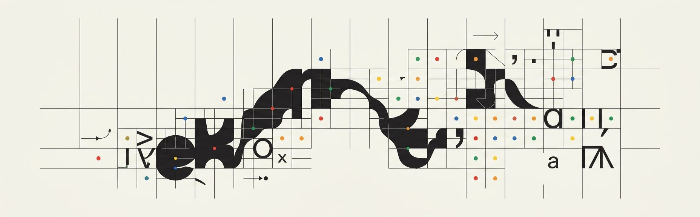
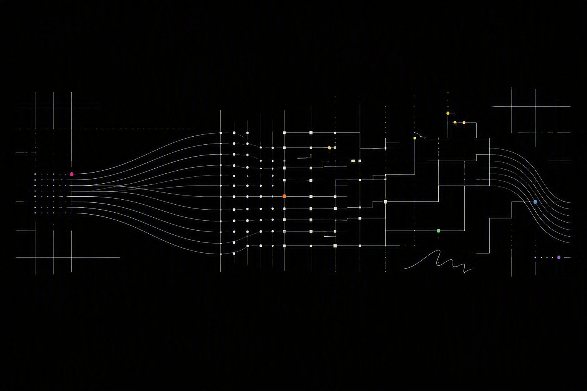

A Style Handoff for Your A.I.
A set of instructions to hand off to a.i. so that it creates consistent documents · ART 3041
01What you're making
Rules first, then the page.
You already have a homepage online (index.html). In week 1 you wrote a few rules for it — tone, typography — but it wasn't very in depth.
This week you will write a more robust set of design guidelines for a.i. to follow. The result of creating a set of design guidelines is that it stops injecting it's own designs and uses yours; pages/designs will look consistent across assignments/projects. so it stops guessing and builds your page the same way every time. We call this set of design standards a Style Guide, or you'll give it as a "handoff" to the a.i.
Here's a definition of style guide from Figma:
“A brand style guide maintains brand consistency and coherence,” explains Leandro. “It gives you helpful templates and guidance on how to use brand elements, including fonts, typography, logo, color palette, and imagery. It's also a key tool to guide messaging and content creation, providing valuable insights into your company's brand voice, tone, and writing style.”
02Research
Six categories.
You have six style guide categories to research.
Reference
Find two websites you like the look of.
The other five categories come out of this one.
For each one, write down what you like. Look at:
- The headings — big or small, serif or sans.
- The colours — the background, the text, and what the one bright colour is used for.
- How many columns it has, and what happens to them when you narrow the window to phone width.
- What links and buttons look like, and what happens when you hover them.
- Anything that moves.
- How images are treated — edge to edge, inset, overlaid, cropped.
Site 1 ___ · What I like ___
Site 2 ___ · What I like ___
Typography
Go to fonts.google.com and fonts.adobe.com and pick two: one for headings, one for body text. A display font for headings and a plainer one for body usually works. Hint: web search for "font pairing inspiration".
On your index.html: your name at the top, and every line of text under it.
Your name here
Body text sits underneath at this size.
Heading font ___ · Body font ___ · Headings small
Colour
Three colours: background, text, and one accent. The accent is the colour that stands out — links, lines and borders, button fills. Pick them below.
On your index.html: the ground, the words, and every link in your Work list.
Layout
Open your two reference sites, count the columns, then narrow the window to phone width and count again. Pick yours. Then pick how the image across the top sits: running to the edges of the screen, or inset with a margin. And whether your name sits on it or under it.
On your index.html: the shape of the whole page, at both sizes.
Your name
Name
Columns on a laptop 4 · on a phone 1 · Hero inset, with a margin around it · My name sits underneath the image
Links
Your page is a list of links to your assignments. They can be plain text links or buttons. Hover each sample below — what changes is the hover state, and you pick that too.
On your index.html: every item in your Work list.
My assignment links are filled buttons with square corners · on hover it underlines
Motion
Specify an animation. This can be an animated background (as below). But it could also be many other things, such as an animated effect when you hover a link. Pick what it is.
On your index.html: behind everything, the whole time.
My background is a slow colour shift · Speed medium
REFERENCE Site 1: you decide What I like about it: you decide Site 2: you decide What I like about it: you decide TYPOGRAPHY Heading font: you decide Body font: you decide Headings are: small COLOUR Background: #FFFFFF Text: #111111 Accent: #2E9B4F The accent is used for links, borders and button fills, and also for: you decide LAYOUT Columns on a laptop: 4 Columns on a phone: 1 The hero image runs: inset, with a margin around it My name sits: underneath the image LINKS IN MY WORK LIST They are: filled buttons Corners: square corners On hover: it underlines MOVING BACKGROUND What it is: a slow colour shift Speed: medium
This fills itself in as you decide. Anything still reading you decide is a blank you left for the a.i.
03Write the style handoff
Turn your answers into instructions.
The a.i. writes the handoff, out of the answers you just gave. The prompt below already has them in it. Copy it and paste the whole thing into a new chat.
Here are my design decisions for my class homepage — a
one-page index of links to my assignments with a hero image.
REFERENCE
Site 1: you decide
What I like about it: you decide
Site 2: you decide
What I like about it: you decide
TYPOGRAPHY
Heading font: you decide
Body font: you decide
Headings are: small
COLOUR
Background: #FFFFFF
Text: #111111
Accent: #2E9B4F
The accent is used for links, borders and button fills, and also for: you decide
LAYOUT
Columns on a laptop: 4
Columns on a phone: 1
The hero image runs: inset, with a margin around it
My name sits: underneath the image
LINKS IN MY WORK LIST
They are: filled buttons
Corners: square corners
On hover: it underlines
MOVING BACKGROUND
What it is: a slow colour shift
Speed: medium
Turn these into a style handoff: a numbered list of
instructions addressed to you, that you will follow every
time you build or edit my page. Keep every decision exactly
as I wrote it. Where I wrote "you decide," choose something
that fits the rest of my answers and write it in as a rule.
Fill in the technical details a developer would need — sizes,
spacing, breakpoints — based on my answers. Do not ask me
questions. Output only the list.
Read what comes back. If it changed one of your answers, tell it and ask again.
Make a file called handoff.md and paste the list into it. Keep it next to your index.html — you'll upload it in 07.
Everything above happens in class. Everything below is homework.
04Put it in your custom instructions
So you stop repeating yourself.
- Open your Copilot custom instructions.
- Delete the Tone and Words to avoid lines you filled in earlier. Your handoff goes in their place.
- Paste in your handoff.
- Add this line to the end, exactly as written: Do not display code. Always give me a fully updated and downloadable file complete with all HTML/CSS/JS.
- Save it, then open a brand new chat.
- Do the same in every other a.i. you use. ChatGPT has custom instructions, Gemini has saved info, Claude has project instructions. Same handoff in each one.
Custom instructions apply to every conversation, not just the next one. Once the handoff is in there you stop re-explaining it at the start of every chat.

05Make a hero image
Generated, not found.
Your page needs one image, across the top. This is called a "hero image". Generate the image using a.i.
Copilot can generate images, but it sometimes refuses or does a bad job. If it does, use Gemini or ChatGPT — both are free. Claude does not generate images at all, but it is good at writing the prompt for you.
It has to relate to your life somehow. That is as specific as I am going to be — your commute, your apartment, something you own, something you do, what you're into right now, somewhere you go. Take it where you want. In your prompt for the image generation also specify the look/feel. This should "match" the style of the page. Again, what this means is up to you, but you'll know it when you find something that works well.
Rename the file hero.jpg or hero.png, depending on what filetype it saved as.
Things worth putting in the prompt:
- Your colours. Paste in the colour lines from your handoff, so the image matches the page.
- A style. “Vintage.” “High res.” “Dark academic.” “Chillwave.” “Like Picasso painted it in 2024.”
- Text or no text. Say which. If you want lettering, expect to fight for it.
- Realistic or not. Say which.
- The camera and the angle, if it is a photograph. “35mm, shot from below.”
- Colors for the image.
Remember to iterate until you get an image you like. Start new chats to avoid it using its memory of the last image it generated, you may have to tell it explicitly not to do something. It might not listen.
the two hero images were generated by gemini (above) and copilot (below) based on its interpretation of a prompt generated in claude summarizing what it (claude) thought represented the spirit of the design principles / course style guide for AiFD.

06Rebuild index.html
Attach your file, then paste the prompt.
Drag your current index.html and your hero image into the Copilot chat box, then paste the prompt below. Copilot reads the file you attach — you never paste code into the chat.
My style handoff is in your custom instructions.
But I'm also going to paste it here:
[paste your style handoff]
I have attached my page as it is now, index.html, and my hero
image, hero.jpg.
Rebuild the page so it follows the style handoff, and add one thing:
- A background that moves. Written in CSS or JavaScript, inside
the file. Not a video, not an image.
Keep the rules from before:
- One HTML file. The CSS and the JavaScript go inside it.
- Nothing loaded from outside except the image.
- It has to work on a phone as well as a laptop.
- Keep my Work list and the links I have already filled in.
Give me a downloadable HTML file named index.html.
Name the image file in the prompt and then actually name it that. If your prompt says hero.jpg and you upload IMG_4471.png, the page loads with a broken image and nothing tells you why.
07Put it online
Three files this time.
Your page has always been one self-contained file. The image and the handoff are the first exceptions — they have to live in the repository next to the HTML.
- In your repository, click Add file, then Upload files. Drag your image in and click Commit changes.
- Upload handoff.md the same way.
- Upload the new index.html the same way. GitHub asks whether to replace the existing file — say yes, then Commit changes.
- Wait about a minute and reload your live address.
These upload steps are the same ones in the GitHub Pages instructions.
08Check it
Against the handoff, not against your taste.
Open the live address with your handoff next to it. Go down it one line at a time: the type, the three colours, the columns on a laptop and on a phone, what your assignment links look like and what they do on hover, the background that moves, the image across the top.
If it broke a rule, quote that rule back into the chat and ask again.